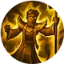
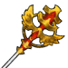
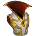
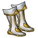
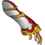
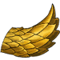
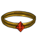
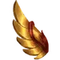
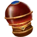
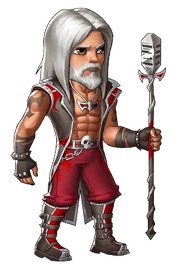

Benedictus is the fifth hero that you will unlock at stage 50. It is the first healer. As a healer, he does damage to enemies as well as heal other heroes.
Abilities
| Holy Fire | |
|---|---|
| Burn your target with Holy Fire inflicting 400% of your damage and heal the friendly hero with the lowest health for 800% of your damage. Cost: 35 Mana. | |
{kind=link}
| Beacon of Light | |
|---|---|
| Summon a Beacon of Light for 10 seconds. The Beacon of Light heals a random hero every second for amount equal to 300% of your damage. 30 seconds cooldown. Cost: 50 Mana. | |
{kind=link}
| Enlightenment | |
|---|---|
 |
Raise your staff and smite your target every second for the next 10 seconds doing 10% more damage on every hit. Smite initial damage is equal to your damage. While Enlightenment is active the hero on the most front slot will be healed for 8% of his max health on every smite. 40 seconds cooldown. Cost: 70 Mana. |
{kind=link}
Gear
| Weapon | Chest | Boots | Ring | |
|---|---|---|---|---|
 |
 |
 |
||
| Wrist | Shoulder | Belt | Relic | |
 |
 |
 |
||
| Ankh | Rune | Idol | ||
 |
||||
| Talisman | Necklace | Trinket | ||
 |
{kind=link}
{kind=link}
{kind=link}
{kind=link}
{kind=link}
{kind=link}
{kind=link}
{kind=link}
{kind=link}
{kind=link}
{kind=link}
{kind=link}
{kind=link}
{kind=link}
Biography
High Priest
{kind=link}
{kind=link}
High priest
No-one can explain why, but in all its war and unrest, every city of the Humans, Elves and minor races respects the Clerics of the House of Prayer. These holy men, healers of body and mind, would be left unharmed and accepted. It is said that in the beginning of the Age of Adventure, when the Darkness first emerged, all beings that served the Light came together in unison, to agree that no matter what the circumstance, Clerics would always be accepted and never turned away.
Benedictus knew first-hand that Clerics respected this debt by never turning away the needy. As an infant, he was left on the steps of one of these Houses, an old temple almost hidden away between the busy streets, workshops and merchant houses of Irongard. One of many left orphaned by the famine that struck during the first Human - Undead War, his family became Clerics and the other orphans of the House. Raised with compassion and love, he chose to stay in the small temple when he reached adulthood, and joined their order as a Cleric Initiate. Learning the healing spells of Holy Magic, he traveled with his mentors to the central House of the Prayer in the Elven city of Talamer, a grand cathedral built inside one of the ancient titanic Elven Spheres.
There, he studied the holy scrolls of the Elven lunar religions, as part of his education in the peoples of Light. At the same time he was providing help to the locals by healing the ill and the wounded. Soon he applied for the position of the Priest of Talamer which gave him the chance to further expand his skills and knowledge in the Holy magic. The years were passing by and Benedictus fame and powers were growing. Then the second Human - Undead war began and his service was required in Irongard, as a member of the army's healing squad. Hundreds of people every day were hospitalized after getting wounded at the front.
During the siege of Irongard the High Priest fall in the battle and chaos spread among the clerics. That was the moment of Benedictus. He left the infirmary and charged to the front. He climbed to the highest gate tower in order to oversee the battle and he started casting the ancient spells that he learned in Talamer. The sky changed colors and the sun became brighter as a huge Holy aura started surrounding his body. His words starter becoming louder and the light stronger. Beams of light were leaving his body and shooting down the undead. Soon in their position there was a big pile of bones looking like a forgotten graveyard. He then jumped of the tower and levitated to the front line. He casted another spell that shielded all the warriors close to him and instantly a squad was formed that charged the Undead spreading death and chaos in their ranks. At this point the Undead started fleeing the battle and Irongard was safe once again. When the battle was over Benedictus became the leader of all clerics and was named the new High Priest and a hero of the realm.
The Rockstar
{kind=link}

{kind=link}
The rockstar
This skin could only be obtained during the September 2024 Decorated Heroes Event.
Benedictus, High Priest by day, but by night his alter ego emerges at the the Arena of Kings where he rocks the crowd with electric performances, fueled by his love for legendary ballads of Guild Zeppelin. While his daily duties demand formality, his soul sometimes craves to “play bad”. Out of respect for his daytime role, everyone indulges his rockstar dreams, maintaining his “secret” identity as he moonlights as the most eccentrical and revered performer in Irongard.
The Cheerful Monk


{kind=link}
The cheerful monk
This skin could only be obtained during the Epic Games Special Offer from 2 October 2025 to 9 October 2025.
Though famed as High Priest of Irongard, even Benedictus understands that faith cannot thrive on solemnity alone. After years of war and duty, he discovered the joy of simple things - laughter, fellowship, and a well-brewed pint. Wandering beyond cathedral walls, he became known in taverns and roadside shrines alike, where his staff was used less for smiting foes and more for tapping kegs.
Far from a fall from grace, this new path revealed a different side of holiness: that healing sometimes begins with shared stories, clashing tankards, and a hearty belly-laugh. Villagers whisper that the “Cheerful Monk” carries as much wisdom in his ale as in his scriptures, for one drink in his company lifts burdens almost as swiftly as his spells.
So whether he’s raising a barrier of light on the battlefield, or raising a toast at a harvest feast, Benedictus proves that joy, too, is divine.
Dialogue
Before unlocking:
- Aurelia: Wait, what was that?
- Burt: Look at the Sky! It's changing colors! Some beams of magic are radiating from the north!
- Aurelia: A powerful foe. Or perhaps an ally? Let's get closer.
After unlocking:
- Aurelia: A priest! Who were you fighting, holy man?
- Benedictus: I was on my way back from Talamer, where I went to study holy scrolls. There was an ambush.
- Aurelia: The holy scrolls of Talamer? Only high priests are allowed near the vaults. Who are you?
- Benedictus: I am Benedictus, Irongard's high priest. I oversee all clerics in the Realm.
- Aurelia: Benedictus! Irongard's siege was stopped by your efforts alone! I fought as well. Where is your entourage?
- Benedictus: My entourage was cut down returning from a humble research mission. I seek only fiery retribution to the ones responsible, the agents of Darkness.
- Aurelia: We serve the same purpose, High Priest. Light our path and fight with us!